#使用 IDEA 创建一个 SpringBoot 项目
-
File -> New -> Project
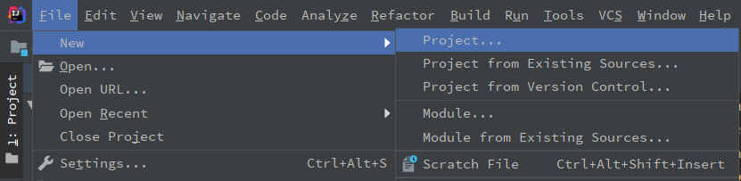
-
选择 Spring Initializr，Project SDK 自己选择，Service URL 选择 Default 即可，点击 Next
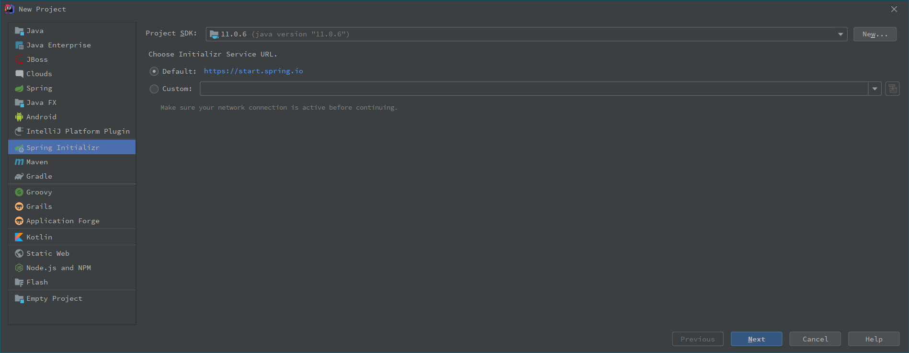
-
Artifact 修改为自己的项目名即可，Type 选择 Maven project，Packing 为项目最后的打包方式，有 jar 和 war 两种选择，示例选择 jar 包
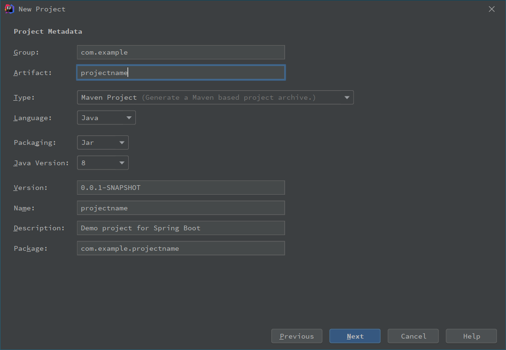
-
Web 中勾选 Spring Web，Template Engines 中勾选 Thymeleaf，SQL 中勾选 JDBC API, MyBatis Framework, MySQL Driver
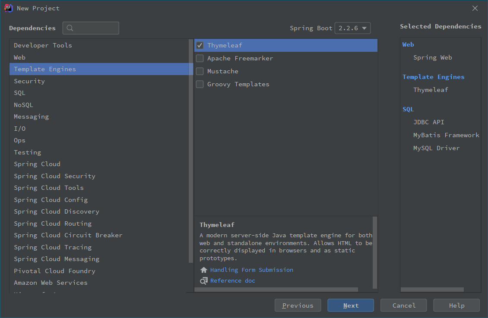
-
选择项目的路径，点击 Finish
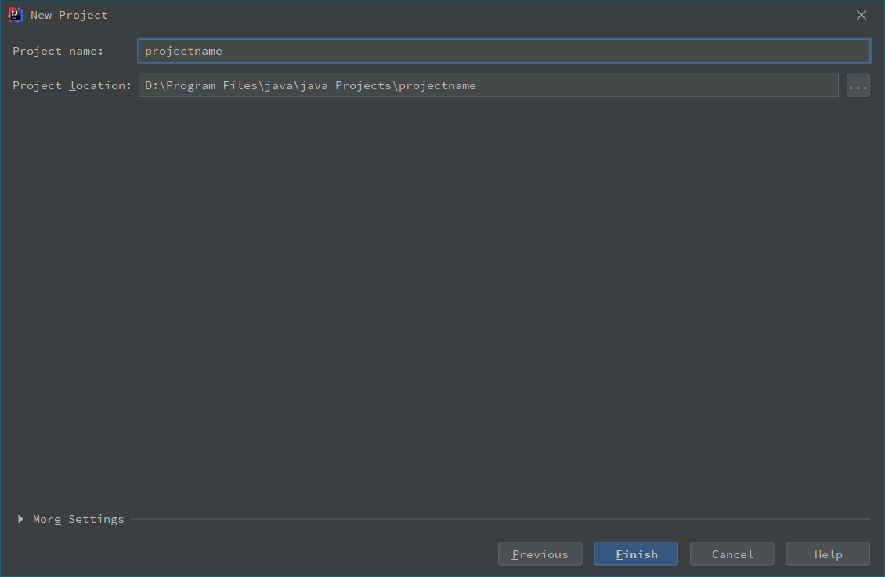
-
刚创建好的项目结构
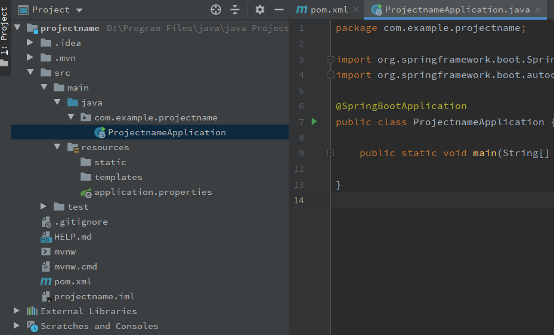
#连接数据库
-
点击 IDEA 右侧的 Database 按钮
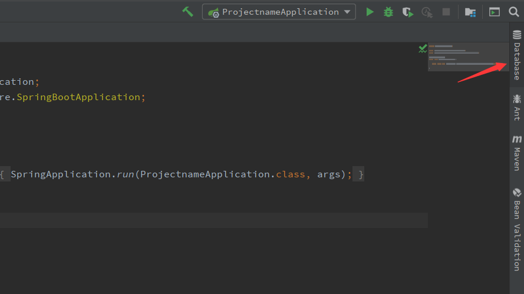
-
点击 “+” 号，选择 Data Source，选择 MySQL
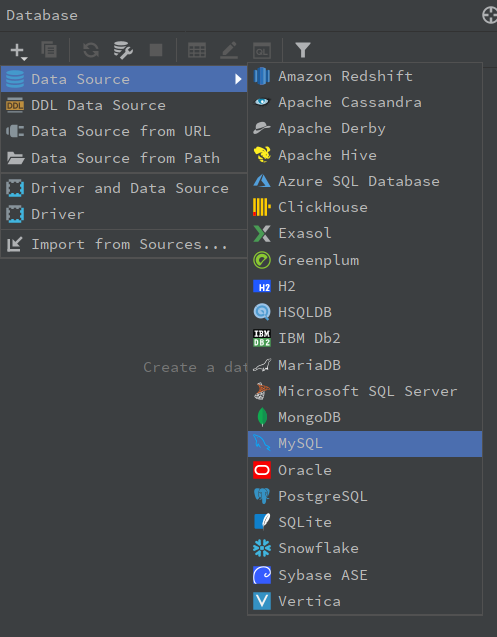
-
填写 MySQL 的用户名和密码，以及要连接的数据库名，点击测试连接
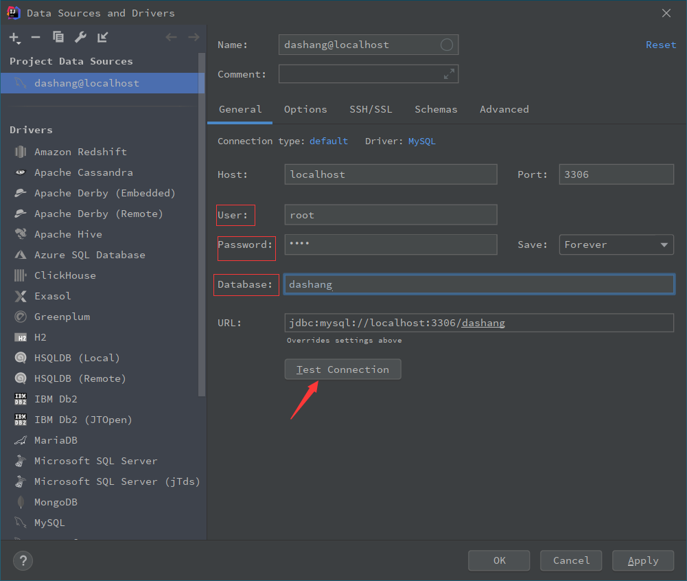
#SpringBoot 的文件说明
-
pom.xml 主要描述了项目的 maven 坐标，依赖关系，开发者需要遵循的规则，缺陷管理系统，组织和 licenses，以及其他所有的项目相关因素，是项目级别的配置文件。
1 2 3 4 5 6 7 8 9 10 11 12 13 14 15 16 17 18 19 20 21 22 23 24 25 26 27 28 29 30 31 32 33 34 35 36 37 38<!-- 项目的一些信息，初始化时自动生成 --> <modelVersion>4.0.0</modelVersion> <parent> <groupId>org.springframework.boot</groupId> <artifactId>spring-boot-starter-parent</artifactId> <version>2.2.5.RELEASE</version> <relativePath/> <!-- lookup parent from repository --> </parent> <groupId>com.dashang</groupId> <artifactId>dashang-backstage</artifactId> <version>0.0.1-SNAPSHOT</version> <name>dashang-backstage</name> <description>dashang project for Spring Boot</description> <properties> <java.version>1.8</java.version> </properties> <!-- 打包方式 --> <packaging>jar</packaging> <!-- 这里面添加依赖，每一个dependency都是一个依赖，meven仓库https://mvnrepository.com/ --> <dependencies> <dependency> <groupId>org.springframework.boot</groupId> <artifactId>spring-boot-starter-web</artifactId> </dependency> <dependencies> <!-- 使用的插件 --> <build> <plugins> <plugin> <groupId>org.springframework.boot</groupId> <artifactId>spring-boot-maven-plugin</artifactId> </plugin> </plugins> </build> -
application.properties 配置文件，可以重命名为 application.yml，使用 YAML 编写配置文件。如果使用 yml 文件，注意键冒号后面要一个空格再写值。
## 数据库配置 spring.datasource.url=jdbc:mysql://localhost:3306/dashang?useUnicode=true&characterEncoding=utf-8&allowMultiQueries=true&serverTimezone=Asia/Shanghai spring.datasource.username=root spring.datasource.password=1217 spring.datasource.driver-class-name=com.mysql.cj.jdbc.Driver ## mybatis mybatis.type-aliases-package=com.dashang.model mybatis.mapper-locations=classpath:mapper/*.xml mybatis.configuration.map-underscore-to-camel-case=true -
Application 类，一定要放在最外层，是项目的启动类，会自动扫描加载和它同级及同级子目录下的类。
1 2 3 4 5 6 7 8 9 10 11 12@SpringBootApplication public class DashangBackstageApplication { public static void main(String[] args) { SpringApplication.run(DashangBackstageApplication.class, args); } } /* @SpringBootApplication是 @SpringBootConfiguration @EnableAutoConfiguration @ComponentScan 的复合注解 */
#SpringBoot 的项目结构
以一个实际项目为例：
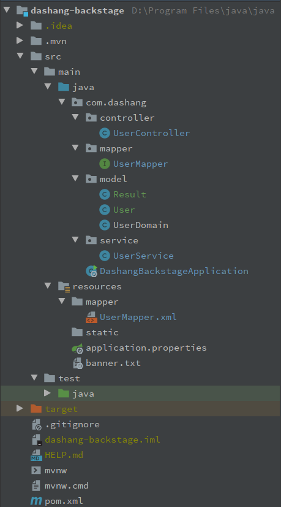
-
controller 层。控制器层，导入 service 层，调用 service 方法，controller 通过接收前端传过来的参数进行业务操作，在返回一个指定的路径或者数据表。
-
mapper 层，或者 dao 层。对数据库进行持久化操作，它的方法是针对数据库操作的，基本用到的就是增删改查。它只是个接口，只有方法名字，具体实现在 mapper.xml 中。
-
model 层，或者 bean 层、entity 层。存放的是实体类，属性值与数据库中的属性值保持一致，实现 setter 和 getter 方法。
-
service 层。存放业务逻辑处理，不直接对数据库进行操作，有接口和接口实现类，提供 controller 层调用的方法。可以在 service 包下新建 serviceImpl 包，放接口的实现类，service 包中放 service 接口。
-
resource 文件夹下的 mapper 文件夹中的 mapper.xml 文件，用来写 SQL 语句的。
1 2 3 4 5 6 7 8 9 10 11 12 13 14 15 16 17 18 19 20 21 22 23<?xml version="1.0" encoding="UTF-8" ?> <!DOCTYPE mapper PUBLIC "-//mybatis.org//DTD Mapper 3.0//EN" "http://mybatis.org/dtd/mybatis-3-mapper.dtd" > <!-- 在自定义的xml文件中书写sql语句，每个书写sql语句的xml文件必须有一个mapper根标签 namespace: 给当前xml文件起别名 --> <mapper namespace="com.dashang.mapper.UserMapper"> <!-- mapper中有四个基本标签：select, update, delete, insert 每一条语句都有一个id，用于唯一标识一条语句，不可重复 --> <!-- 获取所有的用户 --> <select id="getUser" resultType="UserDomain"> SELECT * FROM userinfo </select> <!-- 登录验证 --> <select id="login" resultType="User"> SELECT * FROM user WHERE user_name=#{userName} and password=#{password} and user_type=#{userType} </select> </mapper>
#SpringBoot 运行的流程
- 由前端发起请求
- 根据路径，SpringBoot 会加载相应的 Controller 进行拦截
- 跳转到相应的 Service 处理层
- 跳转到 ServiceImplement (service实现类)
- 在执行 serviceimplement 时会加载 Dao 层，操作数据库
- 执行会跳转到 mapper 层，然后 Mapper 会继续找对应的 mapper.xml 配置文件
- 之后便会跳转到第 4 步继续执行，执行完毕后会将结果返回给第 1 步的请求
#遇到的错误及解决方案
#配置 Maven 的国内源以加速下载
右键项目中的 pom.xml 文件，选择 ‘maven’，选择 ‘create settings.xml’ 或者 ‘open settings.xml’，然后粘贴以下内容
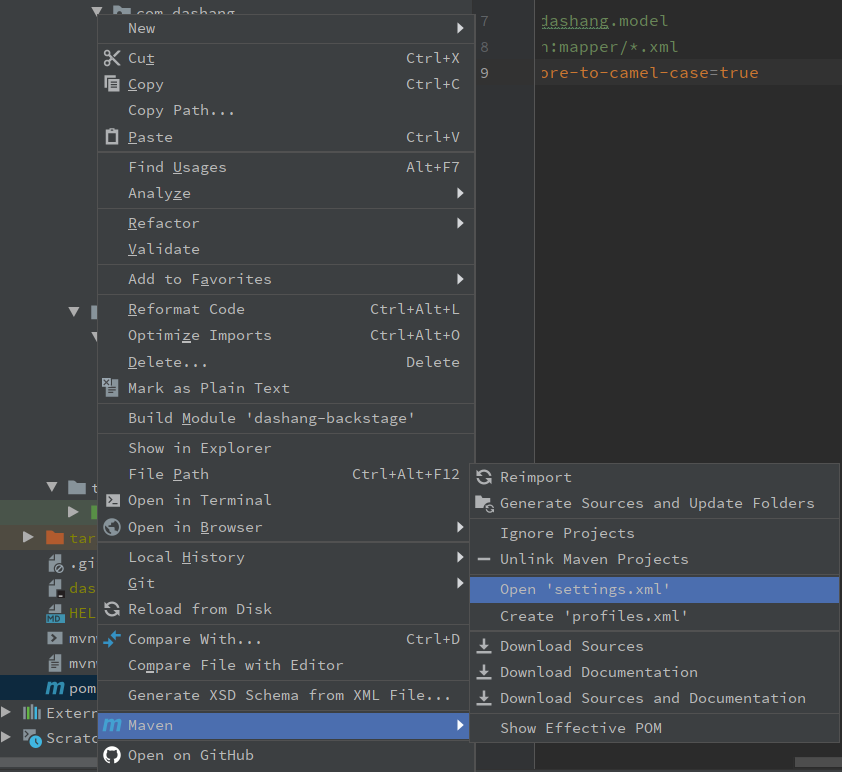
|
|
#连接数据库，测试连接时报错
连接数据库时，测试连接时报错 Server returns invalid timezone. Go to 'Advanced' tab and set 'serverTimezone' property manually.
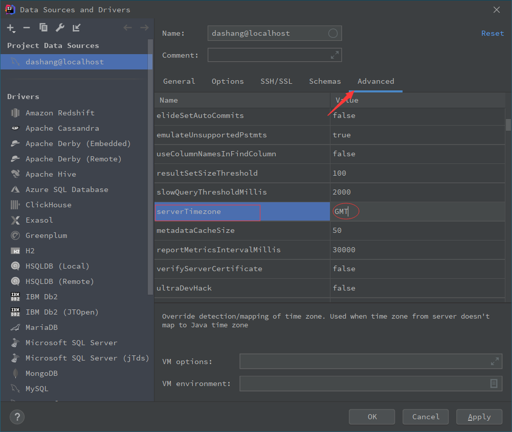
#测试连接时遇到缺失驱动文件的问题
提示 Download missing driver files。正常情况下点击 Download 后 IDEA 会自动下载缺失的文件，但是因为网络原因，可能还会碰到下载失败的情况。
点击 Go to Driver
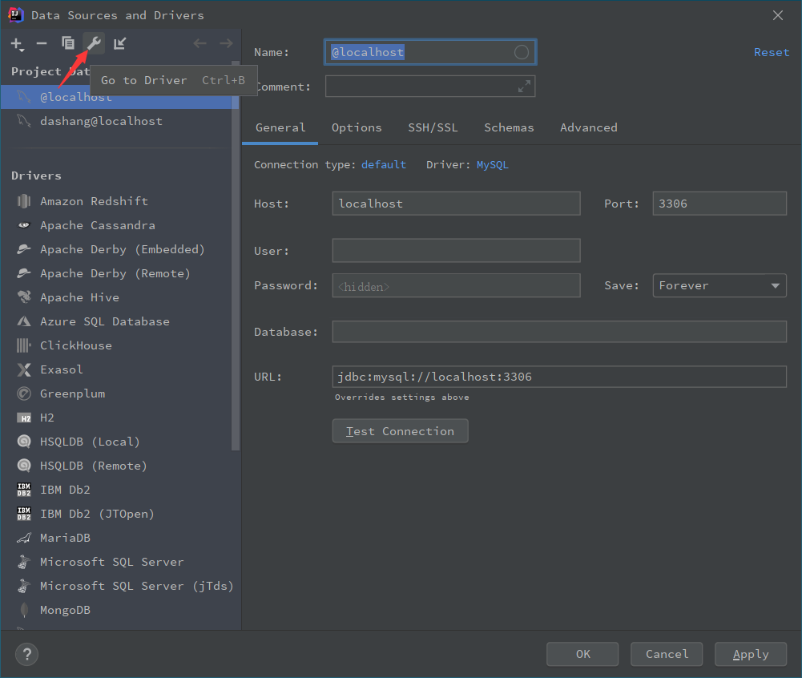
点击 “+” 号，选择 Custom JARs
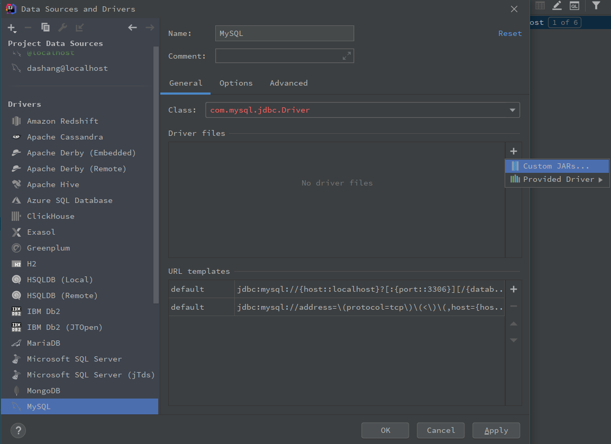
然后在 .m2\repository\mysql\mysql-connector-java 下找到某一版本的 mysql-connector，选中 jar 包导入即可，然后重新测试。如果这个路径下没有文件，那么去 maven 仓库中搜索 mysql-connector-java，然后选择 MySQL Connector/J，选择一个版本，在 pom.xml 中添加依赖，然后刷新重新加载一下包。
#运行时 jdbc 驱动错误的问题
Loading class 'com.mysql.jdbc.Driver'. This is deprecated. The new driver class is 'com.mysql.cj.jdbc.Driver'.
配置文件中将 spring.datasource.driver-class-name=com.mysql.jdbc.Driver
改为 spring.datasource.driver-class-name=com.mysql.cj.jdbc.Driver
com.mysql.jdbc.Driver 是 mysql-connector-java 5 中的，com.mysql.cj.jdbc.Driver 是 mysql-connector-java 6 中的。
此外，还需要在数据库 URL 中设置时区，即在 URL 后添加 &serverTimezone=Asia/Shanghai，如果设定 serverTimezone=UTC，会比中国时间早 8 个小时，如果在中国，可以选择 Asia/Shanghai 或者 Asia/Hongkong。